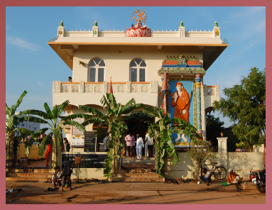

- 
To know more about Brahmasri Chaganti Koteswara Rao garu, please visit www.srichaganti.net.
TEMPLE VIDEOS
 videoevents/video/
Sri Rama Navami 2015.mp4
">
Play videoevents/video/
Sri Rama Navami 2015.mp4
">
Play
|
 Sri Ramanavami Gandhamahotsavam - 2014
Sri Ramanavami Gandhamahotsavam - 2014
Part 1 | Part 2 |
 Shirdi Sainath Maharaj Abishekam Play |
 Sri Rama Navami 2013 Part1 | Part2 |
|
Shirdi Saibaba Paduka Prathista Centenary Celebrations-2012 Play |
 Srirama Navami - 2012 Part 1 | Part 2 |
 Temple Anniversary - 2011 Play |
 Gurupoornima - 2011 Part 1 | Part 2 |
 Namasapthaham and Pallaki Uthsavam - 2011 Part 1 | Part 2 | Part 3 |
 Srirama Navami - 2011 Part 1 | Part 2 |
 Sri Krishnavajjula Rajendrapasad Satsagam Part 1 | Part 2 |
 Sri Sri Vitalananda Sarswathi Maharaj Pravachanam High Bandwidth | Low Bandwidth |
 Sri Saivisvachaitanya Swamiji Satsangam Dec,2010 : Part 1 | Part 2 Oct,2010 : Part 1 | Part 2 |
 Vijayadasami - 2010 Part 1 | Part 2 |
 Karthika Poornima - 2010 Play |
 Ayyappa Bhajan - 2010 Part 1 | Part 2 |
){kind=link}
){kind=link}
){kind=link}
){kind=link}
){kind=link}
){kind=link}
){kind=link}
){kind=link}
){kind=link}
){kind=link}
){kind=link}
){kind=link}
){kind=link}
){kind=link}
){kind=link}
){kind=link}
){kind=link}
){kind=link}
){kind=link}
){kind=link}
){kind=link}
){kind=link}
TEMPLE DONATIONS
Devotees willing to contribute to Sri Sainath Maharaj Sevas or temple activities, you can transfer the funds in the name of Sri Shirdi Sai Charitable Trust, Nellore, India.
Bank Name: Andhra Bank
Branch: 2077 � Annamayya Circle, Nellore - 524001 Current
Account: 207711100000779
IFSC Code: ANDB0002077
For further details, please contact us at info@srisaisadan.org
Our Services
Some words about our Temple serviceS
Abhisekham / Puja
Every morning after the Kakad Aarathi, sacred bath is undertaken for baba. On Thursdays panchamrutha abhisekham is performed. After the bath, Maharaj is readied for darshan. Puja activity begins with prayers to Lord Ganesh, Lord Dattatreya and then to Saibaba.
Dhuni Pooja
At 11:30 AM, priests of the temple perform the Dhuni pooja. Since the inception of the temple, Dhuni is maintained. Udi from the Dhuni is given to devotees. Saibaba used to sit in front of Dhuni and maintained it throughout his stay in shirdi.
Satcharitra Paaraayan
Every evening between 7:30 and 7:45 pm, one chapter from Satcharitra or Gurucharitra is studied by the devotees. Baba during his stay at shirdi, always advised his devotees to read religious scriptures..
Vishnu / Lalitha Sahasranaam
Every evening from 6:45 pm, devotees chant the Vishnu sahasranaam. On Friday, Lalitha sahasranaam is also studied by the devotees. Over the centuries, it has been a practice in the Hindu mythology to study these scriptures. Baba also advocated this in Shirdi.
Aarthis
Four aarthis are conducted in the temple. Everyday at 6:15 am is Kakad aarthi (on thursdays it is at 5:30 am); Noon Aarthi is performed at 12:00 pm; Evening Aarthi is at 6:16 pm and Shejaarthi is at 9:00 pm (on thursday it is at 9:30 pm). Devotees chant the aarthi during this seva..
Sai Bhajans
From Monday to Saturday between 7:30 and 8:45 pm, devotees assemble in the temple hall and do bhajans of Sai, Lord Siva and Lord Vishnu. On Saturday, singers are encouraged to sing religious songs. On Sundays, devotees participate in Satsangam. Sai Maharaj always encouraged the devotees to perform in Dwarakamayi during his regime..
This website is the only official website of "Sri Sai Sadhan Temple Nellore - Sai Sadhan AP". This website or "Sri Sai Sadhan Temple Nellore-Sai Sadhan AP" is not connected or affiliated to any other website(s) or organization(s) in any form or nature. Please make all correspondence only to the addresses and names listed in this website. Thank you for your cooperation. Sai Sadhan AP is a Non-Profit Tax Corporation: Powered by Sai Sadhan AP | 2018 | Design by KPCL